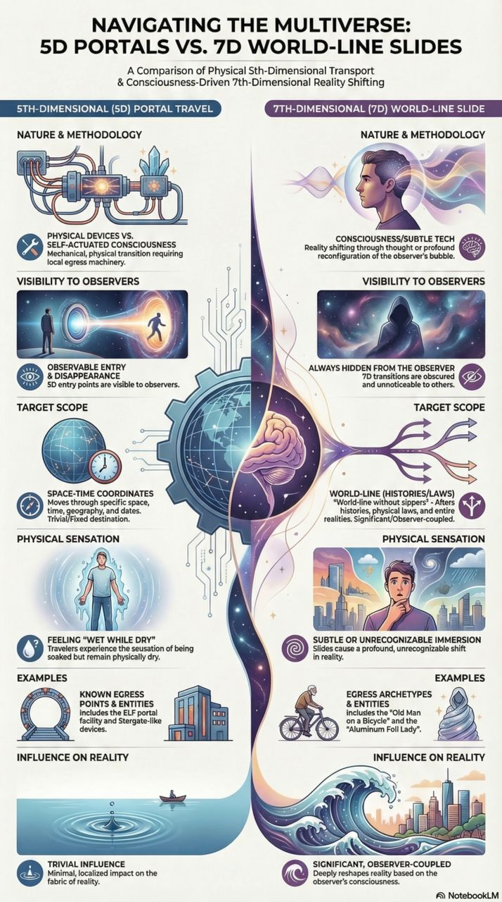

I used “Notebook LM” to generate this from my Metallicman writings.
This is the report that it gave me:
I have initiated the creation of the infographic comparing 5th-dimensional portal travel and 7th-dimensional world-line slides.
As detailed in the sources, these two methods of travel represent vastly different interactions with the multiverse:
- 5th-Dimensional Portal Travel: This is a visible process often requiring bulky technology, like the ELF portal facility. Observers can actually watch a traveler walk into the field and disappear. This method is primarily used for moving across geographic locations (anywhere in the universe) and time (past or future dates). A unique sensory marker of this method is the sensation of being “wet while dry” upon arrival.
- 7th-Dimensional World-Line Slides: In contrast, these slides involve the reality itself changing around the traveler’s consciousness. Crucially, the exact point of transition is always hidden from observers. These slides can be self-actuated through thought and affirmations, allowing a person to deviate from their fated path. Because reality is coupled with the observer, these slides can result in entirely different histories or physical laws, such as the author’s experience in a world-line where zippers did not exist.
The infographic will map out these distinctions in detail, along with documented examples like the Aluminum Foil Lady and the Old Man on a Bicycle. You can find the completed artifact in the Studio tab shortly.
Would you like me to create a slide deck that provides a deep dive into the specific technological devices mentioned, such as the EBP brain implants and the “door key” kits from MAJestic?
This is the Infographic.
